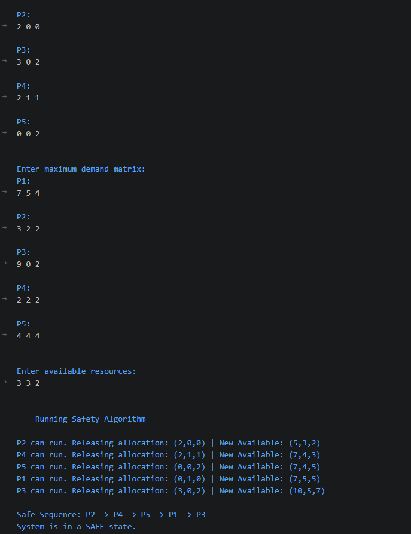
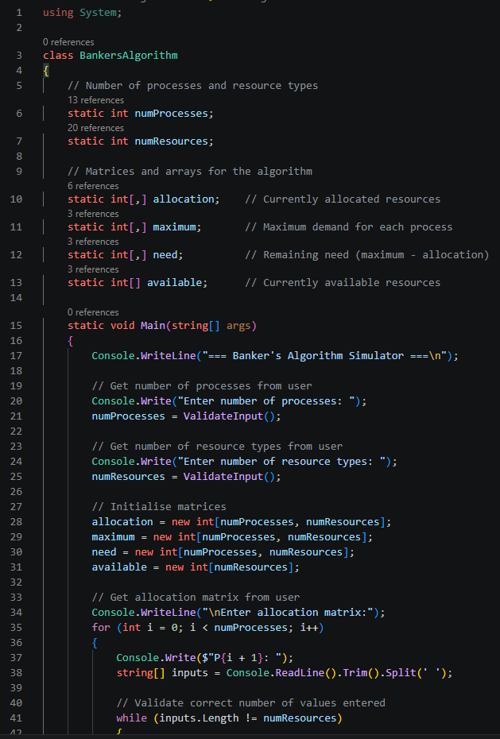
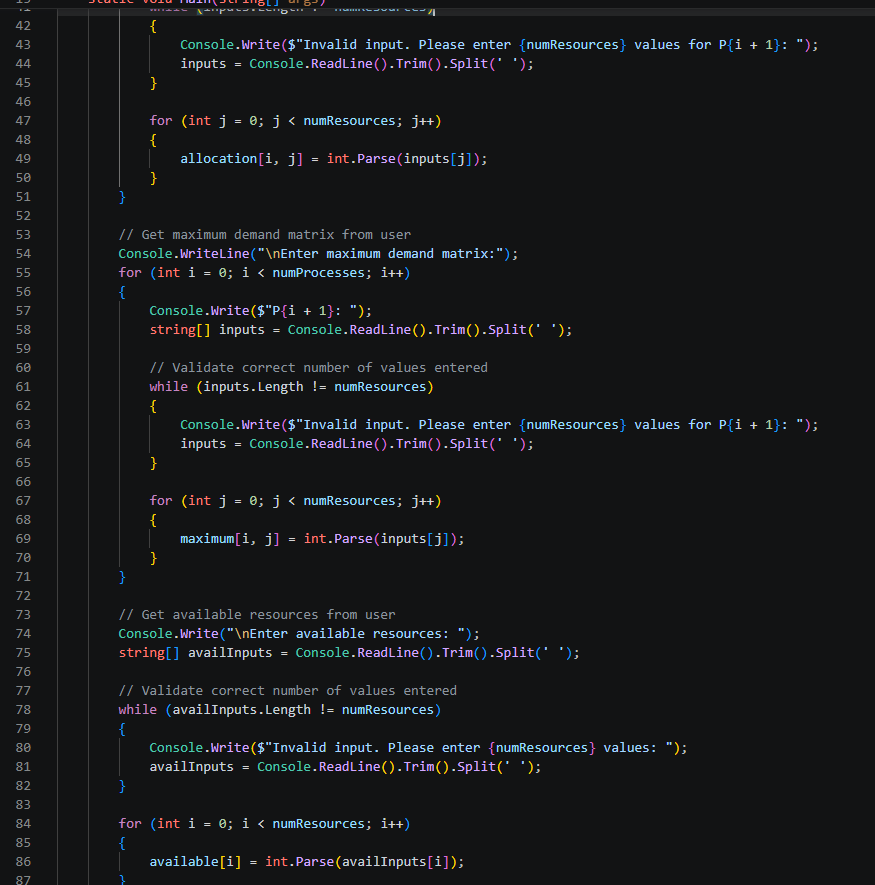
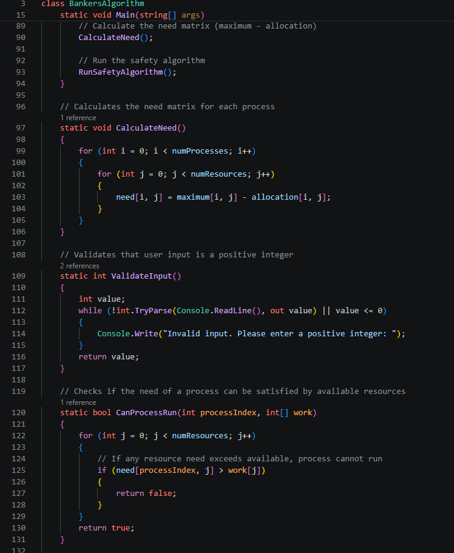
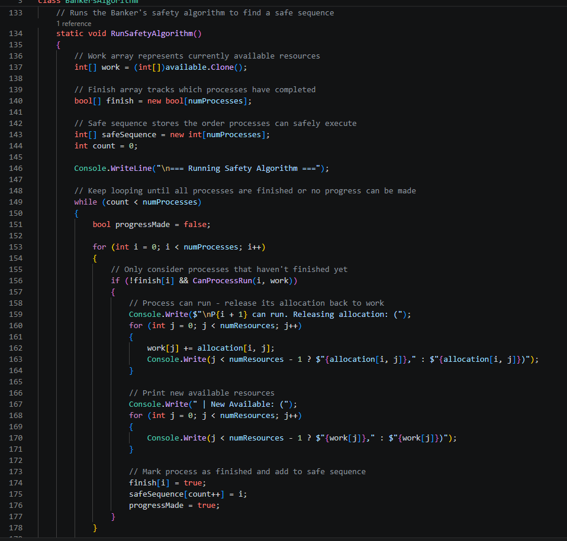
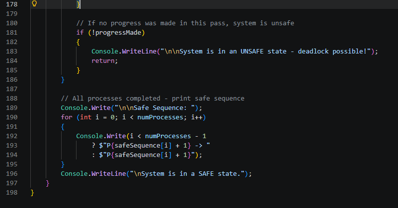

Lab 9 - OS Resource Allocation
Lab was missing the allocation table, so I'm using the standard textbook reference.
The allocation matrix is:
P1: R1=0, R2=1, R3=0
P2: R1=2, R2=0, R3=0
P3: R1=3, R2=0, R3=2
P4: R1=2, R2=1, R3=1
P5: R1=0, R2=0, R3=2
The maximum demand matrix is:
P1: R1=7, R2=5, R3=4
P2: R1=3, R2=2, R3=2
P3: R1=9, R2=0, R3=2
P4: R1=2, R2=2, R3=2
P5: R1=4, R2=4, R3=4
The Need matrix is calculated as Need = Maximum - Allocation:
P1: R1=7, R2=4, R3=4
P2: R1=1, R2=2, R3=2
P3: R1=6, R2=0, R3=0
P4: R1=0, R2=1, R3=1
P5: R1=4, R2=4, R3=2
Task 1
Available: (3,3,2)
A process can run if its Need ≤ Available. When it finishes, it releases its allocation back into Available.
P1 needs (7,4,4) = 7>3, so unsafe
P2 needs (1,2,2) = 1≤3, 2≤3, 2≤2 so Run P2, release allocation (2,0,0)
New Available = (3,3,2) + (2,0,0) = (5,3,2)
Available: (5,3,2)
P1 needs (7,4,4) = 7>5, so unsafe
P3 needs (6,0,0) = 6>5, so unsafe
P4 needs (0,1,1) = 0≤5, 1≤3, 1≤2 s0 Run P4, release allocation (2,1,1)
New Available = (5,3,2) + (2,1,1) = (7,4,3)
Available: (7,4,3)
P1 needs (7,4,4) = 4>3, so unsafe
P3 needs (6,0,0) = 6≤7, 0≤4, 0≤3 so Run P3, release allocation (3,0,2)
New Available = (7,4,3) + (3,0,2) = (10,4,5)
Available: (10,4,5)
P1 needs (7,4,4) = 7≤10, 4≤4, 4≤5 so Run P1, release allocation (0,1,0)
New Available = (10,4,5) + (0,1,0) = (10,5,5)
Available: (10,5,5)
P5 needs (4,4,2) = 4≤10, 4≤5, 2≤5 so Run P5, release allocation (0,0,2)
New Available = (10,5,5) + (0,0,2) = (10,5,7)
Safe Sequence: P2, P4, P3, P1, P5
The system is in a safe state because I found a valid sequence where every process can complete without deadlock. Available resources return to the full (10,5,7) at the end.
Task 2
Available: (5,3,2)
P1 needs (7,4,4) = 7>5, so unsafe
P2 needs (1,2,2) = 1≤5, 2≤3, 2≤2 so Run P2, release allocation (2,0,0)
New Available = (5,3,2) + (2,0,0) = (7,3,2)
Available: (7,3,2)
P1 needs (7,4,4) = 4>3, so unsafe
P3 needs (6,0,0) = 6≤7, 0≤3, 0≤2 so Run P3, release allocation (3,0,2)
New Available = (7,3,2) + (3,0,2) = (10,3,4)
Available: (10,3,4)
P1 needs (7,4,4) = 4>3, so unsafe
P4 needs (0,1,1) = 0≤10, 1≤3, 1≤4 so Run P4, release allocation (2,1,1)
New Available = (10,3,4) + (2,1,1) = (12,4,5)
Available: (12,4,5)
P1 needs (7,4,4) = 7≤12, 4≤4, 4≤5 so Run P1, release allocation (0,1,0)
New Available = (12,4,5) + (0,1,0) = (12,5,5)
Available: (12,5,5)
P5 needs (4,4,2) = 4≤12, 4≤5, 2≤5 so Run P5, release allocation (0,0,2)
New Available = (12,5,5) + (0,0,2) = (12,5,7)
Safe Sequence: P2, P3, P4, P1, P5
The system is in a safe state. Increasing R1 from 10 to 12 allowed P3 to be able to run in Step 2 this time instead of Step 3, as the extra R1 meant P3's need of (6,0,0) could be satisfied earlier which changed the execution order slightly.
Task 3
Available: (5,5,2)
P1 needs (7,4,4) = 7>5, so unsafe
P2 needs (1,2,2) = 1≤5, 2≤5, 2≤2 so Run P2, release allocation (2,0,0)
New Available = (5,5,2) + (2,0,0) = (7,5,2)
Available: (7,5,2)
P1 needs (7,4,4) = 4>2, so unsafe
P3 needs (6,0,0) = 6≤7, 0≤5, 0≤2 so Run P3, release allocation (3,0,2)
New Available = (7,5,2) + (3,0,2) = (10,5,4)
Available: (10,5,4)
P1 needs (7,4,4) = 7≤10, 4≤5, 4≤4 so Run P1, release allocation (0,1,0)
New Available = (10,5,4) + (0,1,0) = (10,6,4)
Available: (10,6,4)
P4 needs (0,1,1) = 0≤10, 1≤6, 1≤4 so Run P4, release allocation (2,1,1)
New Available = (10,6,4) + (2,1,1) = (12,7,5)
Available: (12,7,5)
P5 needs (4,4,2) = 4≤12, 4≤7, 2≤5 so Run P5, release allocation (0,0,2)
New Available = (12,7,5) + (0,0,2) = (12,7,7)
Safe Sequence: P2, P3, P1, P4, P5
The system is in a safe state. Increasing R2 from 5 to 7 had a notable impact since P1 was now able to run in Step 3 instead of Step 4, as the extra R2 resources meant its need of (7,4,4) could be satisfied earlier. This shows that additional resources allow processes to complete sooner, reducing waiting time and improving system performance.
Task 4
The user is asked to input the number of processes and resource types, then the allocation matrix, maximum demand matrix, and available resources. The program checks all inputs to prevent runtime errors. After, it calculates the Need matrix by taking each process's current allocation from its maximum demand. This then tells us how many more resources each process could still request. The Safety Algorithm is in the RunSafetyAlgorithm method, which keeps a work array of the currently available resources and a finish array which tracks what processes have been completed. This method loops through all processes, looking for any unfinished process whose Need can be finished by the current work resources. When it finds one, it simulates that process completing by releasing its allocation back into work, marks it as finished, and adds it to the safe sequence. If no process can run, the system is unsafe and deadlock will happen. If all processes complete, the program prints the safe sequence.






Independent Learning
Deadlock occurs when processes are stuck in a cycle, each waiting for resources held by another, meaning none can proceed. There are four conditions that must all hold for deadlock to occur: mutual exclusion, hold and wait, no preemption, and circular wait. Prevention works by eliminating at least one of these conditions — for example, requiring processes to request all resources upfront removes hold and wait. Avoidance, which is what the Banker's Algorithm does, takes a less restrictive approach by dynamically checking whether granting a resource request would still leave the system in a safe state before allowing it.
In terms of real-world applications, deadlock management is critical in database systems like MySQL, where transactions can lock rows in conflicting orders. MySQL handles this by detecting the deadlock and automatically rolling back one transaction to break the cycle. In cloud platforms like AWS and Azure, resource allocation algorithms ensure no virtual machine can starve others of CPU or memory. In safety-critical systems such as aircraft control or medical devices, deadlock prevention is essential as any freeze could be life-threatening, so resources are typically reserved in full before execution begins.